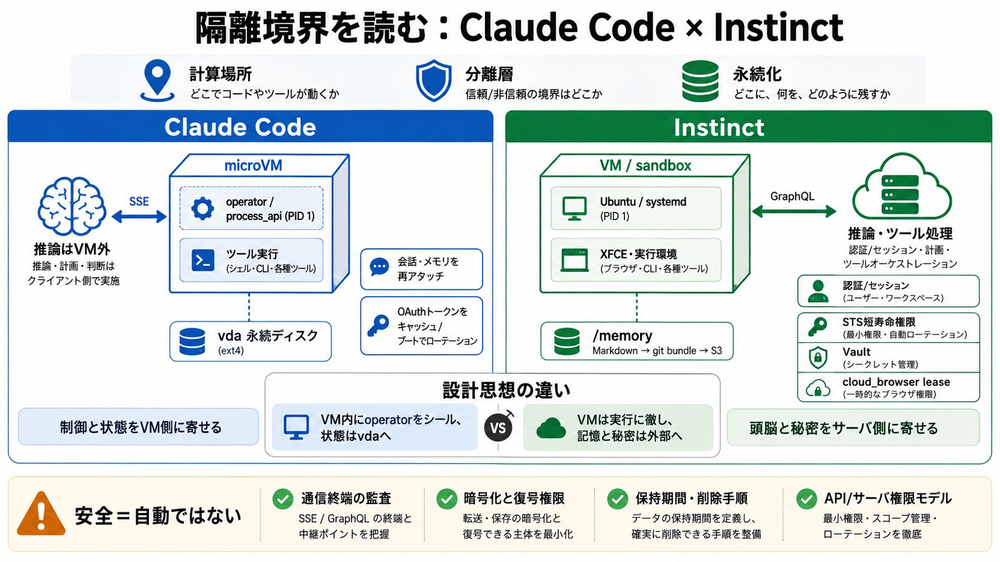

Firecracker microVM
Docs Workshop Firecracker Firecracker is an open source virtualization technology purpose-built for creating and manag…

エージェントが「計算・推論・実行・永続化（記憶）・認証」をどこに置くかで、設計の安全性と体験が分かれます。
本レポートは「計算を行う場所」「分離（セキュリティ）の層」「永続化（記憶・ログ・認証情報）の保存先」を軸に比較します。
VMの中？VMの外？SSE/GraphQLなど通信の終端はどこ？
Firecracker microVM、ホスト制御、サーバ側保護の役割分担
会話やメモリ、認証トークン、ブラウザセッションをどこへ保存するか
Claude CodeはFirecracker microVMの中に「ツール実行ハーネス／operator（PID 1）」を置き、推論本体はVM外で行うよう観察されます。
process_api がPID 1、init/権限、デバッグ耐性に工夫（痕跡ベース）
推論結果を SSE 経由で受領する形として整理（ストリーミング）
Claude CodeはVMに割り当てたブロックデバイス（例：vda）を永続化に使い、再起動時の会話連続性を作っているよう見えます。
読み書き可能ディスクの再アタッチで状態を維持
ホスト発行のOAuthトークンをディスクにキャッシュし、ブートごとにローテーション
InstinctはE2Bのsandbox-as-a-serviceを借りる形でVM上にUbuntu/systemd等が立ち上がる一方、推論呼び出しはVM内で行わないよう観察されます。
実行・デスクトップ環境（例：XFCE）などオーケストレーション中心
VMから GraphQL 経由で api.instinct.com 側サーバが処理
Instinctの永続メモリは /memory のMarkdownで構成され、S3へgit repoとして git bundle 形式で保存されます。
人間が読める形＋差分/履歴管理で検証・復元の導線を作りやすい
「何が」「どの粒度で」「どれくらい保持」されるかでリスクが変わる
認証情報・ブラウザセッションの扱いが両者で異なり、利便性（ログイン維持）と安全性（秘密露出最小化）の軸が見えます。
ホスト発行OAuthトークンをVM側ディスクへキャッシュ（ブートでローテーション）
STSの短寿命権限＋Vaultによる認証挿入、cloud_browser leaseでクッキー持続
差は「隔離環境の中にどこまで“頭脳”と“状態”を閉じ込めるか」に対応していると整理できます。
VM内にoperator（制御）をシールし、状態はVM側の永続ディスクへ寄せる
推論・秘匿性の高い状態（認証/セッション）をサーバ側へ寄せ、VMは実行に徹する
「VMが推論しない／秘密をサーバ側に寄せる」は安全性を上げうる一方、別のリスク（APIゲートウェイ、通信、サーバ侵害、権限逸脱）も増えます。
保護はVMだけでなく通信終端とサーバ権限モデルも必要
SSE/GraphQLの監査・ログ・改ざん耐性が評価点
暗号化・認可・削除ポリシーが不明だと結論の確度が下がる
どちらも「VM破棄を前提にしつつ体験を維持」する方向が見えますが、継続の担い手が異なります。
vdaの再アタッチで会話の連続性（ディスク継続）
S3上の記憶（git bundle）＋サーバ側ブラウザ leaseでログイン維持
設計理解は進んでも、セキュリティ評価の核心は「暗号化・認可・監査・保持期間・削除手順」が実装でどう成立しているかにあります。
推論（SSE/GraphQL）監査、S3のgit bundle暗号化と復号権限、leaseの隔離/削除
観察ベースの推定は強いが万能ではないため、「安全＝自動ではない」を前提にする
本デッキは、ユーザ提示の「観察メモ」とそこからの整理に基づく比較です。外部一次情報（公式仕様や監査報告）の引用はこの入力内にありません。
Firecracker microVM／process_api（PID 1）／SSE／vda／OAuthトークン／E2B／systemd／XFCE／GraphQL／api.instinct.com／/memory／git bundle／S3／STS／Vault／cloud_browser lease
暗号化方式、アクセス制御、保持期間、削除ポリシー、監査ログ、鍵管理、通信終端の防御
※「bilingual term handling（英語＋短い日本語）」が必要な箇所は、本文内で英語専門語＋補足を中心に扱っています。
Docs Workshop Firecracker Firecracker is an open source virtualization technology purpose-built for creating and manag…
Firecracker is an open source virtualization technology that is purpose-built for creating and managing secure, multi-te…
## 📌 TL;DR AWS Firecracker is an open-source virtual machine monitor (VMM) that creates and manages lightweight virtual…
seccomp + capabilities: capabilities chop root's powers into ~40 separate privileges so you can grant only the ones you …
## Firecracker Firecracker is a virtual machine monitor (VMM) built by AWS specifically for running serverless workload…